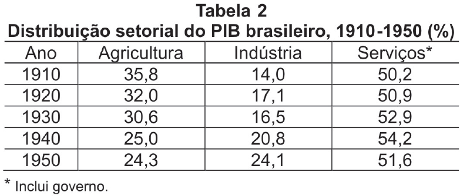

A economia brasileira sofre transformações na primeira metade do século XX, conforme se observa nas Tabelas 1 e 2.
SUZIGAN, W. Industrialização e política econômica: uma interpretação em perspectiva histórica, Pesquisa e Planejamento Econômico, vol. 5, n. 2, 1975, p. 472.
HADDAD, C. Crescimento do produto real. Brasil 1900-1947. Rio de Janeiro: FGV, 1978 e IBGE (1990) Estatísticas históricas do Brasil apud ABREU, M. E VERNES, D. Long-term Brazilian economic growth 1930-1994. Paris: OECD, 1997, p. 26.
A análise das tabelas acima possibilita identificar que
Estão corretas APENAS as afirmações